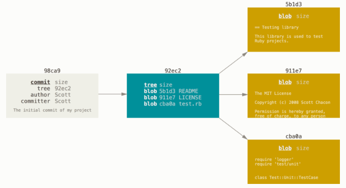

Branching nutshell
分支
為了具體說明，讓我們假設你有一個目錄包含了三個檔案，當使用 git commit 建立一個提交時，Git 會先計算每一個子目錄（本例中則只有專案根目錄）的雜湊值，然後在 Git 版本庫中將這些目錄記錄為樹（tree）物件； 之後 Git 建立提交物件，它除了包含相關提交資訊以外，還包含著指向專案根目錄的樹物件指標，如此它就可以在需要的時候重建此次快照內容。
你的 Git 版本庫現在有五個物件：三個 blob 物件用來儲存檔案內容、一個樹物件用來列出目錄的內容並紀錄各個檔案所對應的 blob 物件、一個提交用來記錄根目錄的樹物件和其他提交資訊。

如果你做一些修改並再次提交，這次的提交會再包含一個指向上次提交的指標:

Git 分支其實只是一個指向某提交的可移動輕量級指標， Git 預設分支名稱是 master， 隨著不斷地製作提交，master 分支會為你一直指向最後一個提交， 它在每次提交的時候都會自動向前移動。
建立一個新的分支
建立一個新分支會發生什麼事呢？ 答案很簡單，建立一個新的、可移動的指標； 比如新建一個 testing 分支， 可以使用 git branch 命令：
$ git branch testing
這會在目前提交上新建一個指標。

Git 如何知道你目前在哪個分支上工作的呢？ 其實它保存了一個名為 HEAD 的特別指標；在 Git 中，它就是一個指向你正在工作中的本地分支的指標（譯注：HEAD 等於「目前的」）， 所以在這個例子中，你仍然在 master 分支上工作； 執行 git branch 命令，只是「建立」一個新的分支——它並不會切換到這個分支。

你可以很輕鬆地看到分支指標指向何處，只需透過一個簡單的 git log 命令， 加上 --decorate 選項。
$ git log --oneline --decorate
f30ab (HEAD -> master, testing) add feature #32 - ability to add new formats to the central interface
34ac2 Fixed bug #1328 - stack overflow under certain conditions
98ca9 The initial commit of my project
在分支之間切換
要切換到一個已經存在的分支，你可以執行 git checkout 命令， 讓我們切換到新的 testing 分支：
$ git checkout testing
這會移動 HEAD 並指向 testing 分支。

這樣做有什麼意義呢？ 好吧！讓我們再提交一次：

非常有趣，現在 testing 分支向前移動了，而 master 分支仍然指向當初在執行 git checkout 時所在的提交， 讓我們切回 master 分支看看：

這條命令做了兩件事， 它把 HEAD 指標移回去並指向 master 分支，然後把工作目錄中的檔案換成 master 分支所指向的快照內容； 也就是說，現在開始所做的改動，將基於專案中較舊的版本，然後與其它提交歷史分離開來； 它實際上是取消你在 testing 分支裡所做的修改，這樣你就可以往不同方向前進。
筆記
當你在 Git 切換分支時，如果 Git 無法很乾淨地切換過去，它就不會讓你切換過去。
讓我們做一些修改並再次提交：
現在你的專案歷史開始分離了； 你建立並切換到新分支，在上面進行了一些工作，然後切換回到主分支進行了另外一些工作， 雙方的改變分別隔離在不同的分支裡：你可以在不同分支裡反覆切換，並在時機成熟時把它們合併到一起； 而所有這些工作只需要簡單的 branch、checkout、commit 命令。
由於 Git 分支實際上只是一個檔案，該檔案內容是這個分支指向的提交的雜湊值（40 個字元長度的 SHA-1 字串），所以建立和銷毀一個分支就變得非常廉價； 新建一個分支就是向一個檔寫入 41 個位元組（40 個字元外加一個換行符號）那樣地簡單和快速。